John Petrucci is a guitarist, lyricist, and producer, best known for being a founding
member for progressive metal juggernauts Dream Theater. Get to know him and his award-winning
career on this page dedicated to celebrating his illustrious career.
Born July 12, 1967...
...in Kings Park, New York, John Petrucci began playing guitar at the young age of 12. Kings Park was just a small suburb hidden within
Long Island, but Petrucci discovered a wide world through the play of the many progressive and metal powerhouses that came to prominence
in the late 70's and 80's. Influenced by artists such as Steve Morse, Randy Rhoads, Steve Vai, and Alex Lifeson, he took his musical studies
very seriously. When he graduated high school, this dedication would prove fruitful; along with close friend and bassist John Myung, he would
accept enrollment at the infamous Berklee College of Music in Boston. It was there at Berklee that they would meet drummer Mike Portnoy
and form the core of what would soon become Dream Theater. Though Berklee is well known as a challenging institution that demands the
utmost of its students, Petrucci did not care to study, and instead wanted to focus purely on practice and recording music. He would soon leave
Berklee along with his classmates to begin their progressive metal journey.
In 1989, Petrucci would meet a woman known as Rena Sands. The two would begin a romance, which culminated in
their marriage in September of 1993. Rena is cut from the same cloth as John; she also can boast of a strong affinity
with the guitar, as she is the guitarist and founding member of the metal band Meanstreak.
Currently, she enjoys touring with the all-female tribute band Judas Priestess throughout
North America.
Musical Career
John Petrucci continues to produce one of the most successful careers in progressive metal history. His career already extends
an astounding thirty years, and he continues to forge ahead with fresh, innovative music. His career
with Dream Theater is particularly outstanding; not only have they produced the critically acclaimed
Images And Words, which has sold upwards of 12 million copies worldwide, the band has garnered many
Billboard 200 Top 10 chart debuts and 2 Grammy nomations as well.
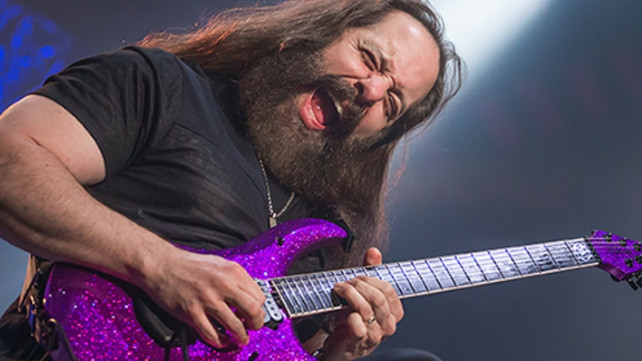
John Petrucci playing one of his signature solos, characterized by a uniquely beautiful tone, technical precision, and blistering speed.

 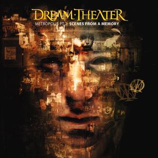
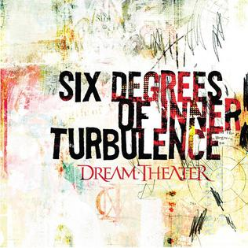
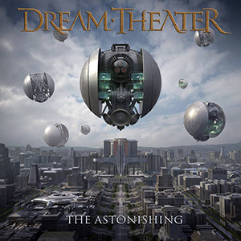
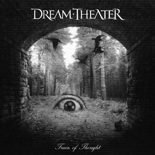
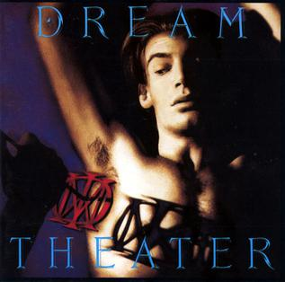
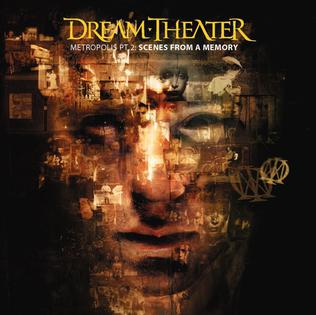
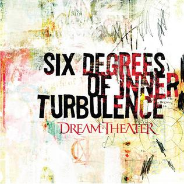
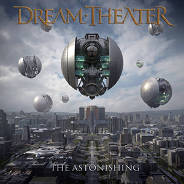
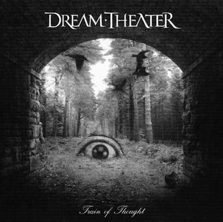
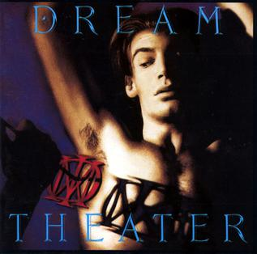